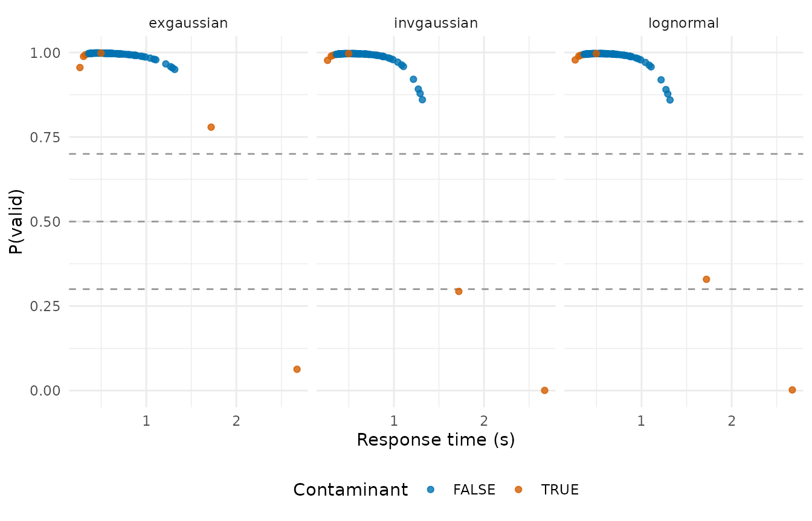

Mixture screening: the contaminant mixture and where it fails
Source:vignettes/articles/mixture-screening.Rmd
mixture-screening.RmdEvery other rule in rtprep draws a line and flags what
falls outside it. rule_mixture() fits a model instead: a
two-component mixture in which one component is the decision process and
the other is a uniform distribution of contaminants, following Ratcliff
and Tuerlinckx (2002). Its output is a posterior probability per trial
rather than a verdict, which is why rt_screen() separates
the probability from the keep decision at all. This article shows what
the fit reports, what its arguments do, and then spends most of its
length on the ways it fails, because a model-based screen fails
differently from a cutoff: it can converge cleanly on an answer that
removes nothing.
The model and the EM
For a response time \(t\) the mixture density is
\[ f(t) = (1 - \pi)\, f_{\text{core}}(t \mid \theta) + \pi\, U(t \mid a, b), \]
where \(\pi\) is the contaminant
proportion, \(f_{\text{core}}\) a
parametric response time distribution with parameters \(\theta\), and \(U\) the uniform on the contaminant bounds
\(a\) and \(b\). Expectation maximisation alternates
two steps: compute each trial’s responsibility, the posterior
probability that the uniform component produced it, then refit \(\pi\) and \(\theta\) with those responsibilities as
weights. .prob is one minus the final responsibility, the
posterior probability that the trial came from the decision process.
rule_mixture("lognormal")
#> <rtprep rule> mixture(lognormal)
#> Flag trials by their posterior probability under a uniform-contaminant / lognormal mixture.The fits table carries the whole fit, one row per group. Everything the sections below discuss is a column of it:
p3_hard <- rt_example |>
filter(id == "p3", condition == "hard")
fit <- screen_fits(p3_hard$rt, rule_mixture("lognormal"))
glimpse(fit)
#> Rows: 1
#> Columns: 20
#> $ .group <chr> "all"
#> $ n_trials <int> 100
#> $ n_dropped <int> 2
#> $ prop_dropped <dbl> 0.02
#> $ converged <lgl> TRUE
#> $ iterations <int> 12
#> $ loglik <dbl> 10.73694
#> $ contaminant_prop <dbl> 0.02722565
#> $ n_fitted <int> 100
#> $ p_correct <dbl> NA
#> $ collapsed <lgl> FALSE
#> $ accuracy_inverted <lgl> FALSE
#> $ bound_lower <dbl> 0.001
#> $ bound_upper <dbl> 3.877568
#> $ bound_inverted <lgl> FALSE
#> $ bound_excludes_fast <lgl> FALSE
#> $ bound_excludes_slow <lgl> FALSE
#> $ distribution <chr> "lognormal"
#> $ par_mu <dbl> -0.5553563
#> $ par_sigma <dbl> 0.3382753converged and iterations describe the EM,
contaminant_prop is \(\hat\pi\), n_fitted counts the
trials inside the bounds, collapsed says whether the fit
landed on the zero-contamination solution, and the par_
columns are \(\hat\theta\) for the
chosen core. p_correct and accuracy_inverted
belong to the accuracy-informed variant and stay NA without
it.
Three cores
The core distribution is the modelling choice, and the same cell fitted three ways shows how much it moves:
cores <- c("exgaussian", "lognormal", "invgaussian")
by_core <- bind_rows(lapply(cores, function(core) {
screen_fits(p3_hard$rt, rule_mixture(core))
}))
by_core |>
select(distribution, converged, iterations, contaminant_prop, n_dropped)
#> distribution converged iterations contaminant_prop n_dropped
#> 1 exgaussian TRUE 13 0.01744821 1
#> 2 lognormal TRUE 12 0.02722565 2
#> 3 invgaussian TRUE 13 0.02756894 2All three converge, and on this cell they agree on the substance: a
contaminant proportion of a few percent and one or two trials removed.
The posteriors behind those decisions differ more than the decisions do.
Plotting .prob against the response time, with the
generator’s truth as colour, shows where each core places its doubt:
posteriors <- bind_rows(lapply(cores, function(core) {
p3_hard |>
mutate(rt_screen(rt, rule_mixture(core))) |>
mutate(core = core)
}))
ggplot(posteriors, aes(rt, .prob, colour = contaminant)) +
geom_hline(yintercept = c(0.3, 0.5, 0.7), linetype = 2, colour = "grey60") +
geom_point(alpha = 0.8) +
scale_colour_manual(values = okabe_ito[c(1, 4)]) +
facet_wrap(~core) +
labs(x = "Response time (s)", y = "P(valid)", colour = "Contaminant") +
theme_minimal() +
theme(legend.position = "bottom")
The slow tail is where the doubt lives. The uniform component covers the whole range at low density, so a trial far out in the tail, where the core density has thinned, tips toward it. The three cores differ in how far out that point lies. The ex-Gaussian carries an exponential tail of its own and absorbs slow trials into it: the contaminant at 1.72 s keeps a posterior of 0.78 under the ex-Gaussian against 0.33 under the lognormal. The anticipations at the leading edge are a different story: they sit close enough to the core’s own left edge that none of the three cores separates them from the fastest genuine trials. Which of the doubtful trials the default policy removes is then a matter of where the threshold sits, and on this cell a threshold of 0.3, 0.5, or 0.7 removes 1, 2, and 2 trials with the lognormal core.
Bounds
The uniform component needs a range. By default it is the group’s observed range buffered outward by half its width on each side, and floored at zero, because a uniform whose edges sit exactly on data points makes the mixture barely identifiable:
fit |>
select(bound_lower, bound_upper, n_fitted)
#> bound_lower bound_upper n_fitted
#> 1 0.001 3.877568 100
range(p3_hard$rt)
#> [1] 0.2638634 2.6730000Numeric bounds are allowed, and they change the model in two ways.
Trials outside the bounds cannot be contaminants, because the uniform
component has zero density there, so they get .prob of
exactly 1 whatever the core says. And they leave the fit, which
n_fitted shows:
narrow <- rt_screen(p3_hard$rt, rule_mixture("lognormal", bound = c(0.3, 1.5)))
#> Warning: Contaminant bounds exclude observed trials in 1 group(s); those trials
#> cannot be classified as contaminants.
attr(narrow, "fits") |>
select(bound_lower, bound_upper, bound_excludes_fast, bound_excludes_slow,
n_fitted, contaminant_prop, n_dropped)
#> bound_lower bound_upper bound_excludes_fast bound_excludes_slow n_fitted
#> 1 0.3 1.5 TRUE TRUE 97
#> contaminant_prop n_dropped
#> 1 0.1845271 10
narrow |>
filter(p3_hard$rt > 1.5) |>
select(.keep, .prob)
#> .keep .prob
#> 1 TRUE 1
#> 2 TRUE 1The warning says the same thing the two bound_excludes_
columns say: some observed trials fall outside the bounds, and the rule
cannot flag them. Bounds chosen from the design ask whether anything
inside a plausible window is a contaminant, and keep everything outside
it by construction; bounds tighter than the data drop trials from a fit
that never sees them, and the two columns are where that shows. The
mixed form bound = c(0.1, "max") fixes one side and leaves
the other to the data.
Convergence and maxit
The EM stops when the log-likelihood changes by less than
tol or after maxit iterations. A fit that hits
maxit first has not converged, and the rule then keeps
every trial in that group, because a screen that cannot be evaluated has
no grounds to remove data. The fits table records it, and
rt_screen() warns once for the whole call rather than once
per group:
impatient <- screen_fits(
rt_example$rt, rule_mixture("lognormal", maxit = 3),
.by = list(rt_example$id, rt_example$condition)
)
#> Warning: The model fit did not converge for 8 of 8 fitted group(s); those
#> trials were all kept. See attr(x, "fits") for which.
impatient |>
select(.group, converged, iterations, n_dropped)
#> .group converged iterations n_dropped
#> 1 p1.hard FALSE 3 0
#> 2 p1.easy FALSE 3 0
#> 3 p2.hard FALSE 3 0
#> 4 p2.easy FALSE 3 0
#> 5 p3.hard FALSE 3 0
#> 6 p3.easy FALSE 3 0
#> 7 p4.hard FALSE 3 0
#> 8 p4.easy FALSE 3 0The default is maxit = 500;
bmm::flag_contaminant_rts() uses 100. Whether the cap binds
depends on the data. Shifted-exponential response times are a shape the
lognormal core fits slowly, and on 50 groups of 100 such trials the two
caps leave different numbers of groups unconverged:
set.seed(2026093)
heavy <- data.frame(
grp = rep(seq_len(50), each = 100),
rt = 0.3 + rexp(5000, rate = 1 / 0.3)
)
unconverged_at <- function(maxit) {
fits <- screen_fits(
heavy$rt, rule_mixture("lognormal", maxit = maxit), .by = heavy$grp
)
sum(!fits$converged)
}
unconverged <- c(at_100 = unconverged_at(100), at_500 = unconverged_at(500))
#> Warning: The model fit did not converge for 10 of 50 fitted group(s); those
#> trials were all kept. See attr(x, "fits") for which.
unconverged
#> at_100 at_500
#> 10 0At 100 iterations 10 of the 50 groups stop at the cap; at 500, 0. An
unconverged fit is not a wrong fit, but it is a fit that removed
nothing, and a comparison between the two packages should pass
maxit explicitly on both sides. bmm also
returns NA probabilities where its fit fails;
rtprep keeps the trials instead, because an NA
would propagate into .keep.
The posterior as a weight
Because .prob is a probability rather than a verdict, it
does not have to pass through a threshold at all.
rt_summary() takes it as a weight vector and computes
weighted moments, so a doubtful trial contributes a little instead of
everything or nothing:
screened <- rt_screen(p3_hard$rt, rule_mixture("lognormal"))
bind_rows(
none = rt_summary(p3_hard$rt, p3_hard$response),
weighted = rt_summary(p3_hard$rt, p3_hard$response, weights = screened$.prob),
trimmed = rt_summary(p3_hard$rt[screened$.keep], p3_hard$response[screened$.keep]),
.id = "route"
) |>
select(route, mean_rt, var_rt, n_trials)
#> route mean_rt var_rt n_trials
#> 1 none 0.6412949 0.10461851 100
#> 2 weighted 0.6096456 0.05326504 100
#> 3 trimmed 0.6095541 0.05120269 98On this cell the weighted and the trimmed means land within a millisecond of each other and both well away from the untreated one, which is what a posterior that is nearly 0 or 1 for most trials produces. Where the posteriors are more spread out the two routes diverge, and the aggregation article compares them alongside the third option, mixture aggregation, which reads the moments off the fitted core and removes nothing.
Where it fails
A contaminant proportion of zero is a fixed point of this EM. If the
responsibilities all go to the core, the M-step returns \(\hat\pi = 0\), and the next E-step has no
uniform mass to assign. The rule reports that outcome as
collapsed = TRUE, and it is the failure mode to look for,
because it arrives with converged = TRUE and a plausible
log-likelihood. Three constructions show when it happens and what else
goes wrong.
The core decides whether a fast block is found
The archetypal contaminant is a block of fast guesses well below the leading edge of the genuine responses. Take a core that is itself ex-Gaussian, the shape most often used to describe empirical response times, and add 40 guesses uniform between 100 and 200 ms:
set.seed(2026093)
exg_core <- 0.45 + rnorm(400, 0, 0.05) + rexp(400, rate = 1 / 0.15)
block <- runif(40, 0.10, 0.20)
truth <- rep(c(FALSE, TRUE), c(400, 40))
fast_block <- function(rt, truth) {
bind_rows(lapply(cores, function(core) {
scr <- rt_screen(rt, rule_mixture(core))
attr(scr, "fits") |>
transmute(
distribution, converged, collapsed,
contaminant_prop, n_dropped,
sensitivity = mean(!scr$.keep[truth])
)
}))
}
fast_block(c(exg_core, block), truth)
#> distribution converged collapsed contaminant_prop n_dropped sensitivity
#> 1 exgaussian TRUE FALSE 0.03044122 6 0
#> 2 lognormal TRUE FALSE 0.16839198 56 1
#> 3 invgaussian TRUE FALSE 0.16826913 56 1The lognormal and inverse Gaussian cores find the block whole. They
also overshoot: the fitted proportion is 0.17 against a true 0.09, and
the 56 trials removed are the 40 guesses plus 16 genuine responses from
the leading edge. The ex-Gaussian core reports 0.03 and removes 6
trials, of which 0 come from the block. It absorbs the guesses by
widening its Gaussian part and driving \(\tau\) toward zero. The package’s
equivalence tests fit a block built the same way with bmm’s
EM and reach the same decisions, so this is a property of the model
rather than of either implementation. The ex-Gaussian is the default in
both packages.
Now the same block on a core produced by the diffusion generator at
rt_example’s regime, which has a sharper leading edge and a
heavier tail:
set.seed(2026093)
ddm_core <- r_contaminated(
400,
par = list(drift = 1.5, bound = 1.2, ndt = 0.30), rate = 0
)$rt
fast_block(c(ddm_core, block), truth)
#> distribution converged collapsed contaminant_prop n_dropped sensitivity
#> 1 exgaussian TRUE TRUE 2.029924e-07 0 0
#> 2 lognormal TRUE TRUE 3.974696e-08 0 0
#> 3 invgaussian TRUE TRUE 5.355859e-08 0 0Every core converges, every core collapses, and the block is untouched. The difference between the two cores is not the block, which is identical, but the shape the mixture has to explain around it. With this core the zero-contamination solution is the attractor for all three, and the fitted proportion says 0 against a true 9%. The rate matters too, and not monotonically. The lognormal core on the diffusion core with blocks of 20, 40, 80, and 120 guesses:
set.seed(2026093)
by_rate <- bind_rows(lapply(c(20, 40, 80, 120), function(n_block) {
rt <- c(ddm_core, runif(n_block, 0.10, 0.20))
screen_fits(rt, rule_mixture("lognormal")) |>
transmute(n_block, true_prop = n_block / length(rt),
contaminant_prop, collapsed, n_dropped)
}))
by_rate
#> n_block true_prop contaminant_prop collapsed n_dropped
#> 1 20 0.04761905 1.643151e-01 FALSE 53
#> 2 40 0.09090909 4.149287e-08 TRUE 0
#> 3 80 0.16666667 9.744909e-09 TRUE 0
#> 4 120 0.23076923 9.991675e-09 TRUE 0The block of 20 is found, at the cost of 33 genuine trials removed
with it; the block of 40 and everything larger is lost entirely. On this
core the size of the block changes the answer, and not monotonically;
collapsed and contaminant_prop, read against
the rate the design makes plausible, are the columns that show which
case occurred.
Accuracy in the likelihood orders better and removes nothing
use_accuracy = TRUE puts accuracy inside the likelihood,
on the reasoning that a fast trial that is correct is less likely to be
a guess than a fast trial that is an error. With \(y\) the accuracy indicator, \(\gamma\) the chance rate known from the
design, and \(p_c\) the estimated
accuracy of the decision process,
\[ f(t, y) = (1 - \pi)\, f_{\text{core}}(t \mid \theta)\, p_c^{\,y} (1 - p_c)^{1 - y} + \pi\, U(t \mid a, b)\, \gamma^{\,y} (1 - \gamma)^{1 - y}. \]
\(\gamma\) is fixed, \(p_c\) is estimated and reported as
p_correct. The case it was built for is contamination that
response time cannot see: informationless responses, which the generator
produces as trials with the decision process’s timing and chance
accuracy. Ranking quality is read off the posterior as the sensitivity
at 90% specificity, the same statistic the package’s tests use:
sensitivity_at <- function(prob, truth, specificity = 0.9) {
cut <- quantile(prob[!truth], 1 - specificity)
mean(prob[truth] <= cut)
}
set.seed(2026093)
lapses <- r_contaminated(
1000,
par = list(drift = 1.5, bound = 1.2, ndt = 0.30),
process = "informationless", lapse_prop = 0, rate = 0.15
)
rt_only <- rt_screen(lapses$rt, rule_mixture("lognormal"))
joint <- rt_screen(
lapses$rt, rule_mixture("lognormal", use_accuracy = TRUE),
response = lapses$response
)
tibble(
model = c("RT only", "RT and accuracy"),
contaminant_prop = c(
attr(rt_only, "fits")$contaminant_prop,
attr(joint, "fits")$contaminant_prop
),
p_correct = c(NA, attr(joint, "fits")$p_correct),
n_dropped = c(sum(!rt_only$.keep), sum(!joint$.keep)),
ranking_sensitivity = c(
sensitivity_at(rt_only$.prob, lapses$contaminant),
sensitivity_at(joint$.prob, lapses$contaminant)
)
)
#> # A tibble: 2 × 5
#> model contaminant_prop p_correct n_dropped ranking_sensitivity
#> <chr> <dbl> <dbl> <int> <dbl>
#> 1 RT only 0.0105 NA 4 0.133
#> 2 RT and accuracy 0.00927 0.803 4 0.245The ranking sensitivity moves from 0.13 under the RT-only model to 0.24 under the joint model. The fitted proportion is 1% and 0.9% against a true 15%, and the two models remove 4 and 4 trials. The accuracy factor favours the core on every correct trial, which widens the basin of the zero-contamination fixed point; the package’s tests build the same construction on a tighter core, where the fit collapses outright and removes nothing at all. Whatever the ordering gains, the keep policy never gets to act on it while the proportion sits at the floor.
Accuracy deflates the evidence when contaminants are accurate
A delayed start-up runs the decision process, only later, so it is usually correct. Under the joint model every correct contaminant has its contaminant evidence attenuated by \(\gamma / p_c\), and that is not neutrality. The package’s tests construct the separable case, a tight ex-Gaussian core with a fixed delay, where the RT-only model is well off the floor and the joint model’s sensitivity falls below it. On diffusion-shaped data the comparison cannot even be made, because every core collapses on delayed start-ups first:
set.seed(2026093)
delays <- r_contaminated(
1000,
par = list(drift = 1.5, bound = 1.2, ndt = 0.30),
process = "delay", delay_min = 0.3, delay_max = 0.9, rate = 0.15
)
bind_rows(
lapply(cores, function(core) screen_fits(delays$rt, rule_mixture(core))),
screen_fits(
delays$rt, rule_mixture("lognormal", use_accuracy = TRUE),
response = delays$response
)
) |>
transmute(distribution, use_accuracy = !is.na(p_correct), converged,
collapsed, contaminant_prop, n_dropped)
#> distribution use_accuracy converged collapsed contaminant_prop n_dropped
#> 1 exgaussian FALSE TRUE TRUE 2.205281e-09 0
#> 2 lognormal FALSE TRUE TRUE 1.657764e-07 0
#> 3 invgaussian FALSE TRUE TRUE 6.586266e-06 0
#> 4 lognormal TRUE TRUE TRUE 9.981146e-09 0A uniform shift of 300 to 900 ms placed on 15% of trials is a heavy
upper tail, and the cores absorb it as their own tail rather than as
contamination. The deflation itself follows from the likelihood above:
each correct contaminant’s evidence for the uniform component is
multiplied by \(\gamma / p_c\), which
is below 1 whenever \(p_c\) is above
chance, so a joint fit that reports a smaller proportion than the
RT-only fit is doing what the equation says rather than finding a
cleaner data set. Two further things the variant cannot enforce: it
assumes contaminants respond at chance, and
response must be coded correct/error rather than
upper/lower boundary, which rtprep cannot tell apart
because both are 0/1. When a fit returns \(p_c\) below chance the component labels
have swapped, and accuracy_inverted says so.
check_guessing() is the diagnostic counterpart of this
variant: it tests the accuracy of the removed fast trials after the
flagging, and because it does not enter the likelihood it cannot move
the fit.
The fits table across groups
Naming the rule does not say what it did. Four columns of the fits
table do: distribution, contaminant_prop,
n_dropped or prop_dropped, and the share of
groups with collapsed = TRUE or
converged = FALSE. On rt_example that summary
is one call:
rt_example |>
reframe(screen_fits(rt, rule_mixture("lognormal")), .by = c(id, condition)) |>
summarise(
groups = n(),
collapsed = sum(collapsed),
unconverged = sum(!converged),
mean_contaminant_prop = mean(contaminant_prop),
mean_prop_dropped = mean(prop_dropped),
true_rate = mean(rt_example$contaminant)
)
#> groups collapsed unconverged mean_contaminant_prop mean_prop_dropped
#> 1 8 0 0 0.05694395 0.04
#> true_rate
#> 1 0.075true_rate is there only because rt_example
carries the truth; on real data the number to read
mean_contaminant_prop against is the rate the design makes
plausible. The rule is in the package because the idea is sound and
widely used; the columns above are how you find out whether it did
anything on your data.